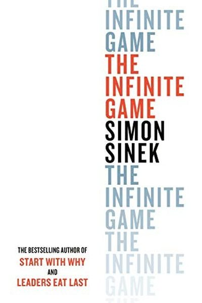

Library › Power & Strategy
The Infinite Game — Summary & Key Lessons

Why some players win and some don't — and why the ones who thrive play the infinite game.
📖 OPEN THE FULL INTERACTIVE BREAKDOWN →🌐 Read it in Hindi, Hinglish, Gujarati, Tamil & 22 more languages — free, with audio.
💡 The Big Idea
Sinek adapts James Carse's distinction: finite games (football, chess) have fixed rules, known players and a clear winner. Infinite games (business, politics, life) have no finish line — players come and go, rules shift, and the goal is to keep playing. Companies that play finite (beat the competitor this quarter) eventually die; companies that play infinite (advance a just cause) build trust, resilience and longevity. The infinite player leads with a cause, trusts their team, and doesn't obsess over short-term scores.
🧠 The 6 Key Lessons
Lesson 1: Finite vs. Infinite
The Game
Finite games end with a winner; infinite games exist to continue. Business is infinite — there's no final whistle. Companies that think in quarters and 'beating the competition' are playing finite in an infinite game, which leads to short-term wins and long-term death. The first choice of strategy: which game are you playing?
📖 Example: Sears and Blockbuster obsessed over beating rivals in the short term while Amazon and Netflix played the infinite game of building trust and capabilities — and outlasted them completely. Read the full example →
⚡ Do this: Write down: are you playing to win this quarter, or to keep playing for decades? Identify one finite mindset habit to drop.
Lesson 2: The Just Cause
The Just Cause
An infinite player needs a just cause: a concrete, aspirational vision of a better future that people can sacrifice for — not a mission statement, not a profit target. The cause gives direction beyond the scoreboard and attracts people who believe.
📖 Example: Apple's cause was never 'make computers' — it was empowering individuals against the establishment. That cause attracted believers and guided decades of decisions. Sinek's example of a just cause: a hospital whose 'why' was 'zero harm' rather than 'more… Read the full example →
⚡ Do this: Write your just cause in one sentence: the better future you're advancing that outlasts any quarter.
Lesson 3: Trusting Teams vs. The Will to Win
Trusting Teams
Finite players use fear: targets, threats, control — which creates teams that hide problems. Infinite players build trusting teams where people feel safe to tell the truth, take risks and act in the company's interest. Trust is a strategic advantage, not a soft value.
📖 Example: Sinek contrasts companies with stacked performance reviews and constant reorgs (fear-driven, hiding problems) with 'infinitely minded' firms that share information openly — the latter adapt faster because problems surface early. Read the full example →
⚡ Do this: Identify one way your team hides problems out of fear. Replace one fear-driven process with an honest, safe alternative.
Lesson 4: The Worthy Rival
The Worthy Rival
Infinite players still have rivals — but they use them as benchmarks, not enemies. A worthy rival shows you your weaknesses and pushes you to improve. You respect them, learn from them, and measure yourself against your own cause — not just against them.
📖 Example: Sinek's example: Southwest used competitors to benchmark its own service standards while staying true to its cause — rival as a mirror, not an obsession. The worthy rival — Sinek's example is the airline that used a competitor's on-time record as its… Read the full example →
⚡ Do this: Name your worthy rival. List two things they do better than you — and turn each into a concrete improvement target.
Lesson 5: Existential Flexibility
Existential Flexibility
Infinite players are willing to change course — even abandon what made them successful — when the cause demands it. Rigid attachment to a past model is finite thinking. The cause is fixed; the strategy is flexible. In daily life, existential Flexibility rewards the patient and punishes the impatient — the difference is rarely talent and almost always consistency.
📖 Example: Netflix abandoned its DVD model to pursue streaming because its cause ('entertain the world conveniently') outlived the format. Blockbuster's rigidity — protecting the store model — was existential inflexibility. Existential flexibility — the ability to… Read the full example →
⚡ Do this: Ask: what would we have to give up to better serve our cause? Hold the cause, stay flexible on the how.
Lesson 6: The Courage to Lead
The Courage to Lead
Infinite leadership requires courage: to make decisions that may hurt this quarter but serve the long game, to admit uncertainty, and to be human. Leaders with the courage to lead are trusted because they put the cause and the people before the scoreboard.
📖 Example: Sinek points to leaders who cut bonuses to avoid layoffs, who admit mistakes publicly, who say 'we don't know' — these acts build the trust that sustains teams through the inevitable storms. Read the full example →
⚡ Do this: Take one 'courageous' action this week: admit uncertainty, protect the team over the score, or make a call that only serves the long game.
✅ 5-Step Action Plan
- Decide which game you're in — and stop playing finite in an infinite arena.
- Write your just cause in one sentence.
- Replace one fear-driven process with trust.
- Turn your worthy rival into a benchmark, not an enemy.
- Take one courageous, long-game decision this week.
⚠️ When This Doesn't Work
Sinek's 'play the infinite game, ignore finite scoreboards' is inspiring — and Windows Phone played the infinite game beautifully: patient, principled, refusing to chase the scoreboard, building for the long term. It died in 2019 with under 1% market share because the finite game of app ecosystems was won decades earlier by rivals who obsessed over the scoreboard. You don't get to choose which game you're in; the market chooses. Infinite-game thinking is a privilege of leaders who are already winning the finite game. Everyone else needs the scoreboard — at least until they're on it.
💀 The Graveyard Proves It
📱 Windows Phone — Microsoft's Mobile OS — 0.1% Share and a Forgotten Tombstone. Burn: Billions spent; a market Microsoft owned and then lost. Read the full case study →
💬 Best Quotes from The Infinite Game
- “In the infinite game, the goal is not to win — the goal is to keep playing.”
- “A just cause is a vision of a future that is so attractive that people are willing to make sacrifices to help realize it.”
- “When we play the infinite game, we play to keep playing, not to finish.”
Interactive version: mark lessons as read, listen in your language, share quote cards.